Key Takeaways
- Enable Remote Desktop with Intune – Configure the “Allow users to connect remotely by using Remote Desktop Services” setting through a Windows Settings Catalog policy.
- Power Remote Help Unattended Support – This configuration enables Windows devices to accept connections for the new Remote Help unattended support with remote sign-in experience.
- No User Interaction Required – IT support teams can remotely access and control managed Windows devices even when an active user isn’t available.
- Secure & Controlled Access – Remote Help uses Intune RBAC, authentication, and permissions to control who can initiate unattended remote sessions.
In this article, am going to explain how to configure allowing users to connect remotely using Remote Desktop policy with Microsoft Intune. The policy lets administrators allow or restrict Remote Desktop connections on managed Windows devices, providing centralised control over remote access while maintaining organizational security and compliance.
Table of Content
AllowUsersToConnectRemotely Settings
This policy setting allows administrators to control remote access to Windows devices using Remote Desktop Services. When enabled, users who are members of the Remote Desktop Users group can remotely connect to the target device. When disabled, new Remote Desktop connections are blocked, while existing sessions remain active. If the policy is not configured, Windows uses the device’s Remote Desktop setting under System Properties to determine whether remote connections are allowed. By default, remote connections are not allowed. The table below summarizes the available policy settings and their impact on Remote Desktop connections.
| Scope | Editions | Applicable OS |
|---|---|---|
| ✅ Device ❌ User | ✅ Pro ✅ Enterprise ✅ Education ✅ IoT Enterprise / IoT Enterprise LTSC | ✅ Windows 10, version 1703 [10.0.15063] and later |
Create a Configuration in Intune to Allow Users to Connect Remotely Using Remote Desktop
To configure the Remote Desktop functionality for users in Microsoft Intune, start by signing in to the Microsoft Intune Admin Center with your administrator credentials.
- Navigate to Devices > Windows > Manage devices > Configuration
- Click on +Create > +New Policy
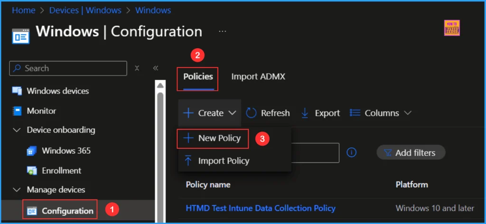
We will create a new configuration profile from scratch. First, we need to provide the options listed below. The settings catalog serves as a library of available configurations in Intune.
- Platform: Windows 10 and later
- Profile type: Settings catalog
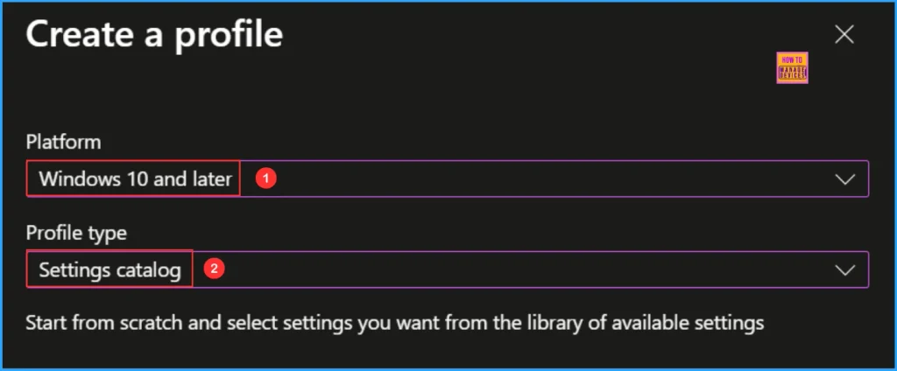
In the Basics details pane, name the configuration policy “Allow Users to Connect Remotely Using Remote Desktop.” It is also helpful to include a short description outlining the policy’s purpose. Once you have done this, click Next.
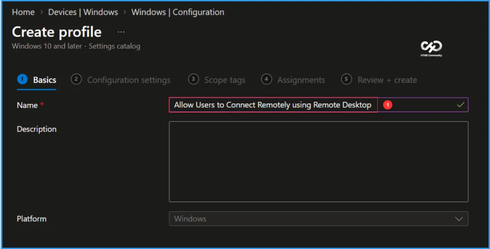
To add the necessary settings, navigate to the Configuration settings pane and click on +Add settings located in the bottom-left corner of the page.
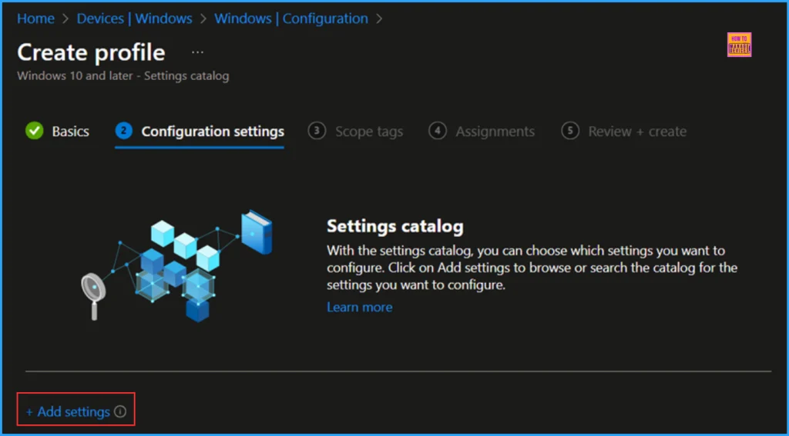
Search for “Allow Users to Connect Remotely” as your keyword. This will help us find the appropriate policy based on your current needs. Next, navigate to the category labelled Administrative Templates Remote Desktop Services Remote Desktop Session Host Connections. Click on it, then check the option “Allow users to connect remotely by using Remote Desktop Services” Finally, close the Settings picker window.
Note: This policy setting allows you to configure remote access to computers by using Remote Desktop Services. If you enable this policy setting, users who are members of the Remote Desktop Users group on the target computer can connect remotely to the target computer by using Remote Desktop Services. If you disable this policy setting, users cannot connect remotely to the target computer by using Remote Desktop Services. The target computer will maintain any current connections, but will not accept any new incoming connections. If you do not configure this policy setting, Remote Desktop Services uses the Remote Desktop setting on the target computer to determine whether the remote connection is allowed.
Note: This setting is found on the Remote tab in the System properties sheet. By default, remote connections are not allowed. Note: You can limit which clients are able to connect remotely by using Remote Desktop Services by configuring the policy setting at Computer Configuration\Administrative Templates\Windows Components\Remote Desktop Services\Remote Desktop Session Host\Security\Require user authentication for remote connections by using Network Level Authentication. You can limit the number of users who can connect simultaneously by configuring the policy setting at Computer Configuration\Administrative Templates\Windows Components\Remote Desktop Services\Remote Desktop Session Host\Connections\Limit number of connections, or by configuring the policy setting Maximum Connections by using the Remote Desktop Session Host WMI Provider.
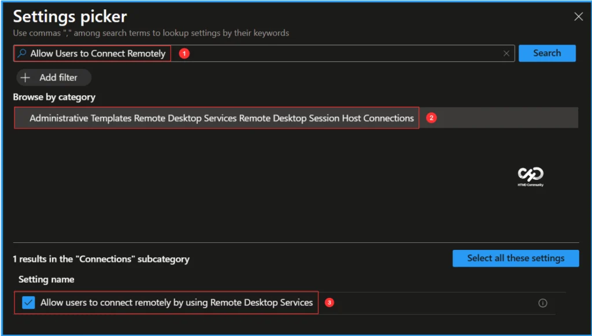
On the Connections configuration settings page, ensure the option for Allow users to connect remotely using Remote Desktop Services is enabled, then click Next.
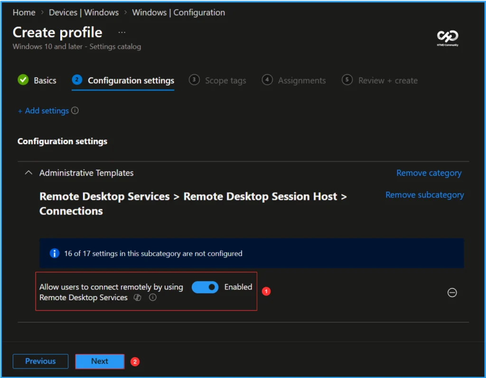
On the next page, keep the Scope tags set to Default. If your tenant has customized scope tags, you can choose them based on your policy requirements, then click Next.
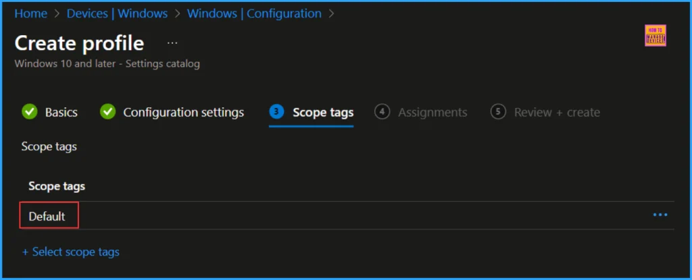
I am assigning the configuration policy to the Windows 365 Cloud PCs device group. To do this, click Add groups, then select the desired device group under the Included groups option. In this example, I am not using any filters, and I have left the Excluded groups option blank.
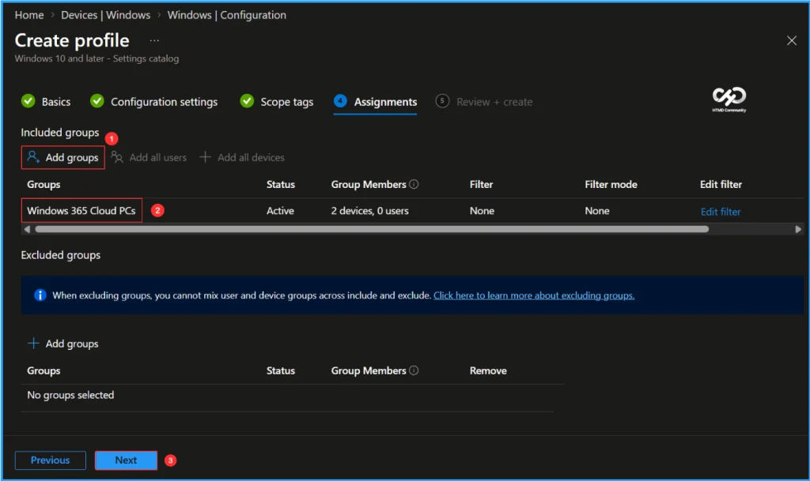
On the Review + create page, review all the settings defined for the Allow Users to Connect Remotely using Remote Desktop policy. Once you’ve verified that everything is correct, select Create to deploy the policy.
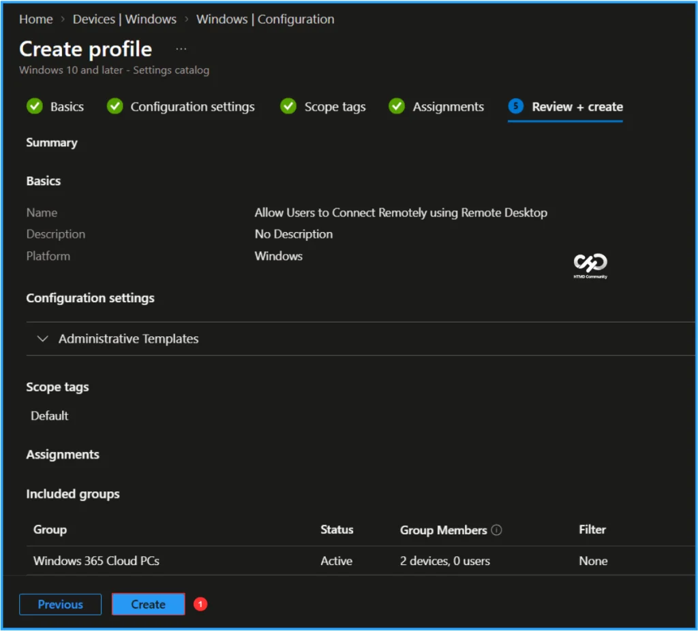
Monitor the Allow Users to Connect Remotely using Remote Desktop Policy Deployment
The configuration policy has been deployed to the Windows 365 Cloud PCs Microsoft Entra ID Device group. Once the Cloud PC is synced, the policy will take effect immediately. To monitor the policy deployment status from the Intune Portal, follow the steps below
- Navigate to Devices > Windows > Configuration > Search for the Allow Users to Connect Remotely using Remote Desktop configuration policy.
- Under the Device and user check-in status, you can see the policy’s deployment status
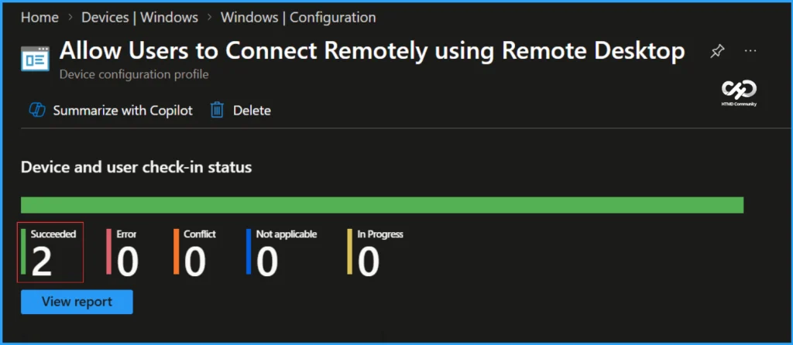
End User Experience
We can now verify whether the Allow Users to Connect Remotely using Remote Desktop policy is functioning correctly. First, login to the device that is affected by this policy. Click on the Start menu and search for Settings, then go to System, and select Remote Desktop. Since we deployed this configuration, you will notice that the Remote Desktop option is enabled and greyed out, meaning users cannot change these settings. Additionally, there is a message on the screen stating, Some settings are managed by your organization. Therefore, we can conclude that the policy is working as expected!
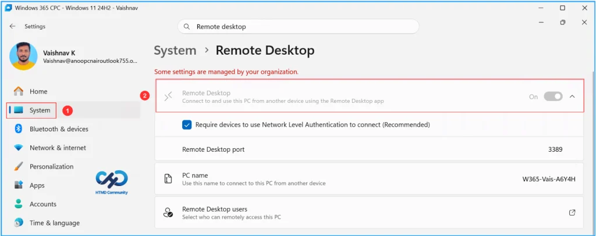
Need Further Assistance or Have Technical Questions?
Join the LinkedIn Page and Telegram group to get the latest step-by-step guides and news updates. Join our Meetup Page to participate in User group meetings. Also, join the WhatsApp Community and the WhatsApp channel to get the latest news on Microsoft Technologies. We are there on Reddit as well.
Author
Vaishnav K has 13 years of experience in SCCM, Intune, Modern Device Management, and Automation Solutions. He writes and shares knowledge about Microsoft Intune, Windows 365, Azure, Entra, PowerShell Scripting, and Automation. Check out his profile on LinkedIn.